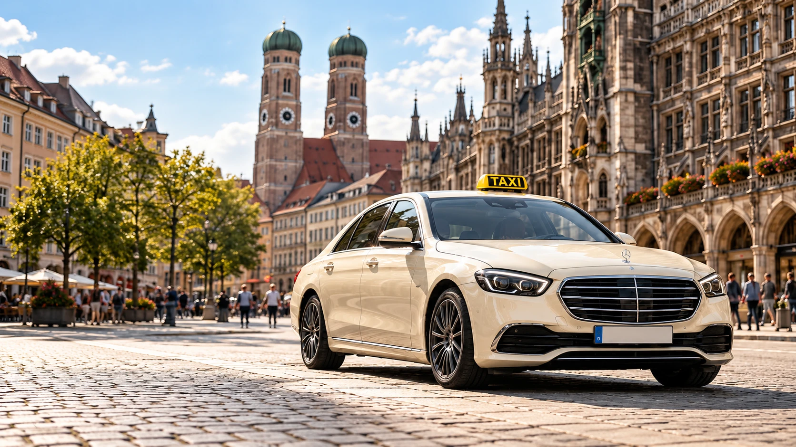

Ihr Ziel.
Unsere Fahrt.
Entspannt unterwegs in München und Umgebung. Ihre persönliche Taxi- und Transfervermittlung.
Ihre nächste Fahrt beginnt hier.
Unverbindliche Anfrage · Bestätigung erfolgt persönlich · Uhrzeit in München
Ein Ziel. Viele Möglichkeiten.
Vom kurzen Weg durch die Stadt bis zur nächsten Reise: Wir bringen Ihre Anfrage zum passenden Partner.
Flughafentransfer
Entspannt zum Flughafen München und wieder nach Hause. Ihre Abholung einfach im Voraus anfragen.
Zum Flughafen & zurück02Stadtfahrten
Zum Bahnhof, ins Hotel oder quer durch die Stadt. Wir vermitteln Ihre Fahrt in München und Umgebung.
München & Umgebung03Geschäftsfahrten
Für Termine, Messebesuche und besondere Anlässe. Individuelle Taxi- und Mietwagenvermittlung auf Anfrage.
Individuell geplantDie Reise beginnt.
Ganz entspannt.
Geschäftsreise oder Urlaub: Fragen Sie Ihre Fahrt zum Flughafen und die Abholung nach der Landung bequem im Voraus an.
- Transfer zum und vom Flughafen München
- Abholung am gewünschten Ort anfragen
- Direkter Kontakt für Ihre Reiseplanung
In drei Schritten zur Fahrt.
Fahrtwunsch eingeben
Abholort, Ziel und Wunschtermin auswählen. Besondere Wünsche einfach ergänzen.
Anfrage senden
Die vorbereitete Nachricht per WhatsApp oder E-Mail an MEY senden.
Bestätigung erhalten
Wir klären die Vermittlung mit einem Partnerunternehmen und bestätigen die Details.
In München zu Hause.
Für Sie verbunden.
MEY Taxi München ist Ihre unabhängige Vermittlungs- und Taxizentrale. Wir verbinden Privat- und Geschäftskunden mit konzessionierten Partnerunternehmen in der Region.
Lernen Sie MEY kennenNoch Fragen?
Gerne.
Die wichtigsten Antworten für Ihre nächste Fahrt. Für alles Weitere sind wir persönlich erreichbar.
Kontakt aufnehmenWie frage ich eine Fahrt an?
Geben Sie Abholort, Ziel, Datum und Uhrzeit an. Ergänzen Sie im nächsten Schritt Ihre Kontaktdaten. Anschließend können Sie die vorbereitete Anfrage per WhatsApp oder E-Mail versenden. Ihre Fahrt ist erst nach persönlicher Bestätigung vereinbart.
Kann ich eine Fahrt im Voraus anfragen?
Ja. Teilen Sie uns Ihren gewünschten Termin mit. Wir prüfen die Vermittlung und stimmen die Einzelheiten persönlich mit Ihnen ab.
Was kostet meine Fahrt?
Für vermittelte Taxifahrten gelten die jeweils anwendbaren Taxitarife. Individuelle Mietwagenfahrten werden vorab angefragt und mit dem ausführenden Unternehmen vereinbart. Auf unserer Preisseite finden Sie eine Übersicht.
Wer führt die Fahrt durch?
MEY Taxi München vermittelt Ihre Anfrage an rechtlich selbstständige, konzessionierte Taxi- und Mietwagenunternehmen. Wir haben keine eigene Fahrzeugflotte. Der Beförderungsvertrag besteht mit dem ausführenden Unternehmen.
Wohin darf es gehen?
Sagen Sie uns Ihr Ziel. Wir kümmern uns um die Vermittlung.